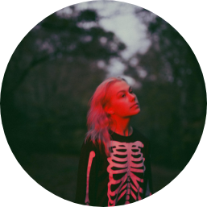
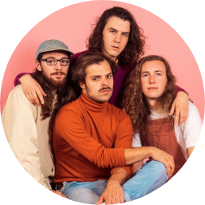

Genre: Rock, Alternative/Indie
CAGE THE ELEPHANT
Cage the Elephant is an American rock band formed in 2006 in Bowling Green, Kentucky. They relocated to England and settled in London in 2008, shortly before their self-titled first album was released.

Genre: Indie Rock, Indie Folk
Phoebe Bridgers
Phoebe Lucille Bridgers is an American singer, songwriter, guitarist, and producer from Los Angeles, California. She made her solo debut with the studio album Stranger in the Alps, followed by Punisher, which earned Bridgers widespread critical acclaim and four Grammy Award nominations.

Genre: Rock, Alternative/Indie
PEACH PIT
Peach Pit is an indie pop band from Vancouver, British Columbia, Canada. The band consists of singer and rhythm guitarist Neil Smith, lead guitarist Christopher Vanderkooy, bassist Peter Wilton, and drummer Mikey Pascuzzi.